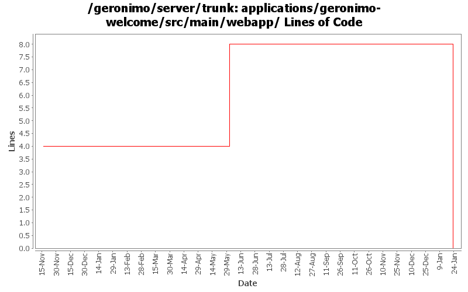

[root]/applications/geronimo-welcome/src/main/webapp
 WEB-INF
(0 files, 0 lines)
WEB-INF
(0 files, 0 lines)

| Author | Changes | Lines of Code | Lines per Change |
|---|---|---|---|
| Totals | 14 (100.0%) | 12 (100.0%) | 0.8 |
| dwoods | 3 (21.4%) | 9 (75.0%) | 3.0 |
| jdillon | 4 (28.6%) | 2 (16.7%) | 0.5 |
| hcunico | 1 (7.1%) | 1 (8.3%) | 1.0 |
| kevan | 6 (42.9%) | 0 (0.0%) | 0.0 |
(GERONIMO-3747) Moved applications/* to plugins/*
0 lines of code changed in 3 files:
fixed link to FAQ to use the redirect instead.
1 lines of code changed in 1 file:
GERONIMO-1413 Console needs to set JSP and Servlet contentType to UTF-8
8 lines of code changed in 2 files:
GERONIMO-3139 Update Copyright year in Admin Console and Welcome app
1 lines of code changed in 1 file:
r6700@Bliss: jason | 2007-03-19 16:00:23 -0700
Use jsp comment to avoid pulling in bunch of junk into the compiled page
2 lines of code changed in 1 file:
GERONIMO-2537 Integrating patch supplied by Jay McHugh. Thanks Jaymvn -Ptools geronimo:start! Adds apache src header to files that were missing appropriate license information. This is everything except applications/console.
0 lines of code changed in 2 files:
GERONIMO-2537 Update the src headers in the non-module files. They need to be compliant with the new ASF src header and copyright policy (http://www.apache.org/legal/src-headers.html). I also did some cleanup of the src headers and tried to get them in a consistent format
0 lines of code changed in 4 files: